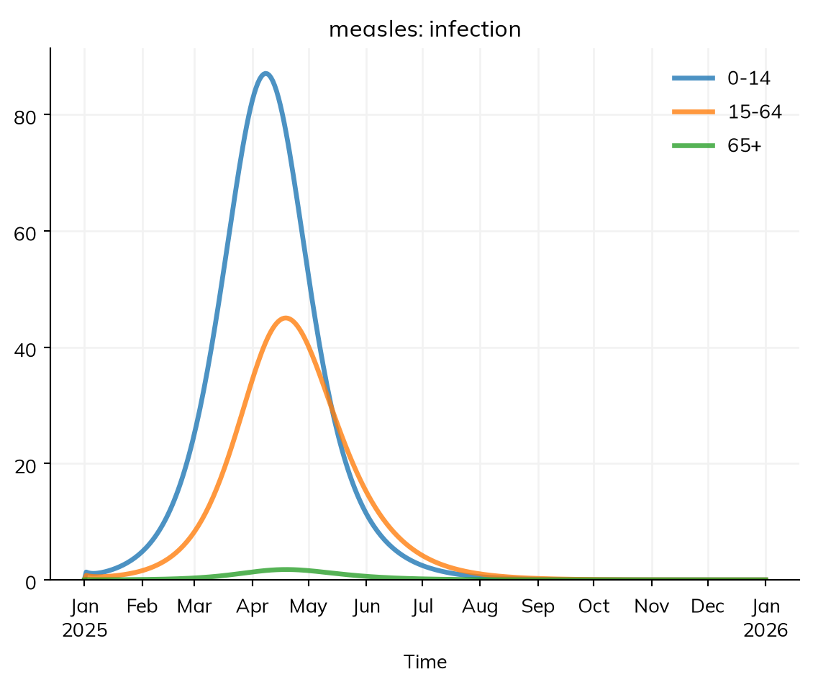
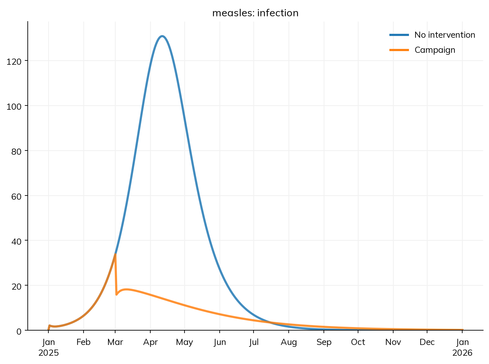
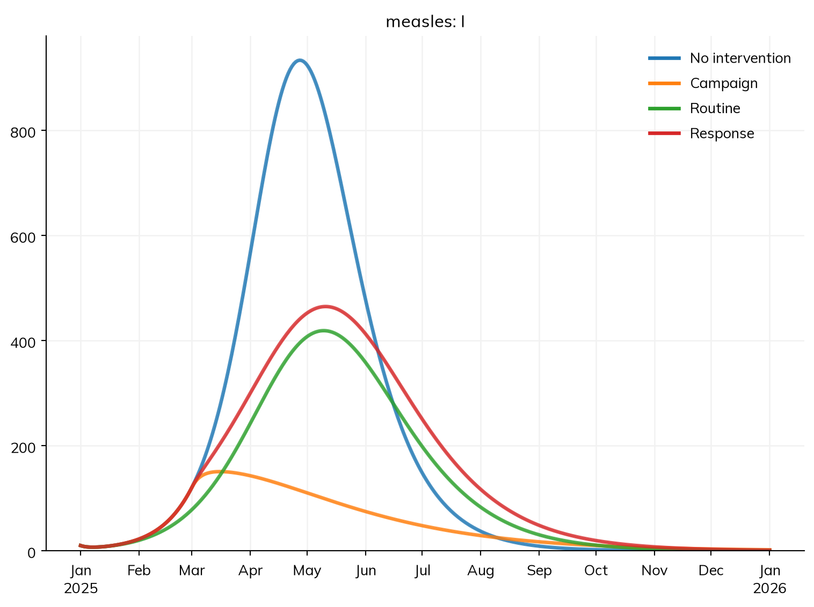
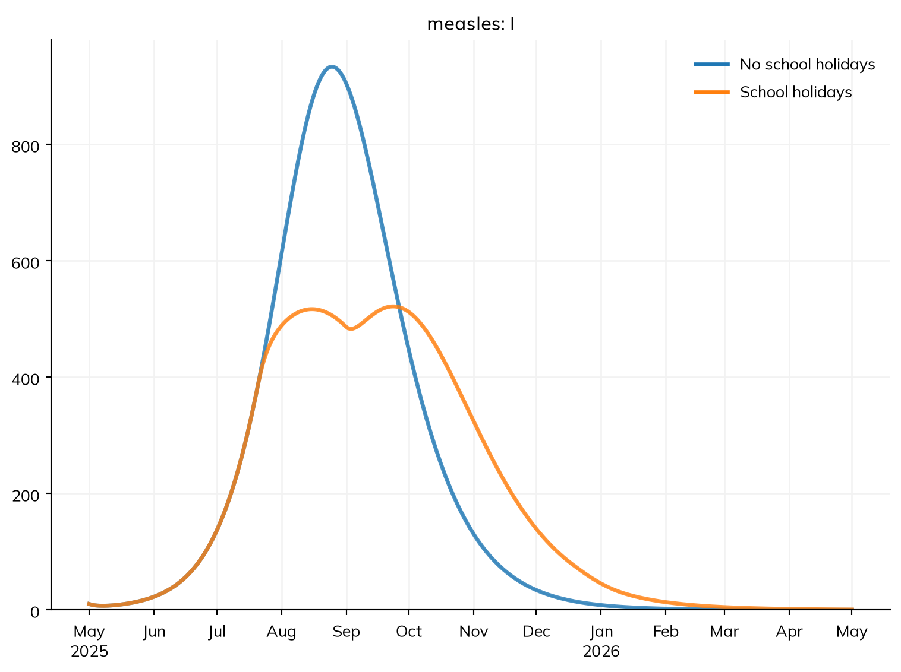
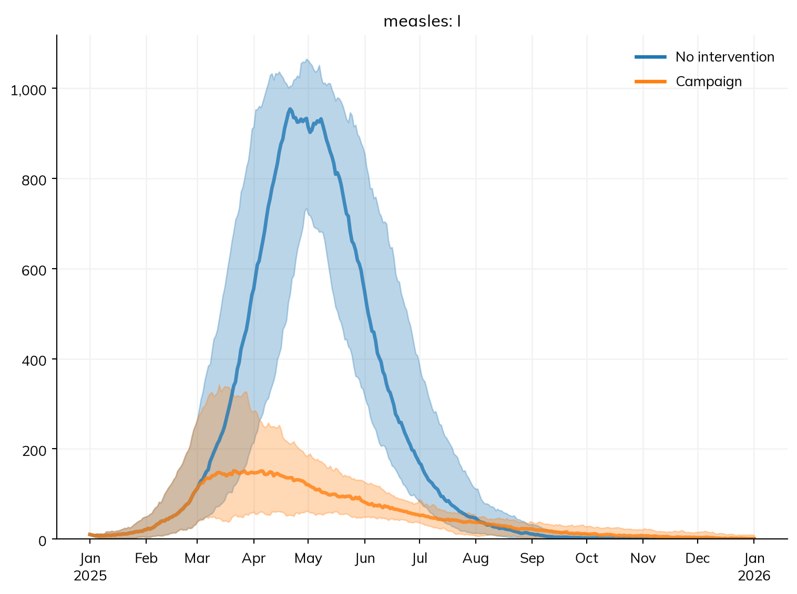

How much difference could a vaccination campaign make? Most models are built to answer a question about an intervention: how many infections would a campaign prevent, and would it prevent more than another way of spending the same effort? This tutorial adds vaccination to the measles model, compares a one-off campaign with routine vaccination and with a public health response that cuts transmission, and runs them side by side as scenarios. It then adds one more thing that changes over time, the school calendar, and runs the scenarios many times, to see how sure the answer is.
By the end of this tutorial, you will be able to:
give a vaccine to a chosen group of people, once or over time;
change a parameter of the model from a given date, for interventions that don’t hand anything out, or for a calendar such as school terms;
compare several scenarios by name, and read the difference between them from a table;
run each scenario many times, and tell the uncertainty in an outcome from the uncertainty in a difference.
The model so far
This is the measles model from T4 – Age groups and contacts: an SEIR model in a town of 100,000 people in three age groups, who mix according to a contact matrix in which children have the most contacts. Most people are already immune, but only 80% of children, and 10 people are infectious on 1 January 2025. With these contacts and this immunity, each case at the start infects about 2.5 others:
import starsim as ssS, E, I, R = ss.states('S E I R')beta = ss.par(0.14, bounds=[0.05, 0.5]) # The rate of infection per contact with an infectious person, per dayinfection = S >> E @ beta*I # Infection, at a rate of β times the contacts with infectious peopleprogression = E >> I @ ss.days(10) # Latent for 10 days on averagerecovery = I >> R @ ss.days(8) # Infectious for 8 days on averagemeasles = ss.Disease(infection, progression, recovery, init =dict(R=ss.by(age=[0.8, 0.92, 0.98])), # The share immune in each age group init_n =dict(I=10), # 10 people infectious at the start)measles.stratify(age={0: 0.3, 15: 0.6, 65: 0.1}) # Ages 0-14, 15-64, and 65+, with the share of people in eachcontacts = ss.contacts(ages=[0, 15, 65], matrix=[[10, 6, 1], [3, 8, 1], [3, 6, 3]]) # Contacts a day, between age groupssettings =dict(networks=contacts, total_pop=100_000, start='2025-01-01', stop='2026-01-01')sim = ss.Sim(measles, **settings)sim.run()sim.results.measles.infection.by('age').plot()
Starsim kernels: Rust, OUT OF DATE (built before its source last changed, so results may be wrong): run "./build" in starsim/solvers/rust/
Sim: measles, 100,000 people, as an ODE, 2025-01-01 to 2026-01-01
measles: R0 = 15.8 (R = 2.46 at the start, with 11% susceptible), with 10 infectious at the start
Note: people do not age between the age groups, since nobody is born or dies; pass use_aging=True to age them
Done in 0.0027 s; measles: 8,795 infections; at most 934 infectious, on 2025-04-27

With R0 = 16, an outbreak can only be prevented if more than 1 − 1/16, or about 94%, of people are immune (the herd immunity threshold). Here about 89% are, so the outbreak infects about 8,800 people over the year, most of them children.
A vaccination campaign
A vaccine has two parts in a model: the product, what the vaccine does to the people who get it (here, it cuts their chance of infection by 93%, about what one dose of measles vaccine does), and the delivery, who gets it and when. ss.vaccinate() takes both: the vaccine’s efficacy, and the group (where=), the share of that group reached (coverage=), and when (at=, for a campaign on given dates).
Suppose the town’s health office runs a campaign on 1 March, two months into the outbreak, that reaches 80% of children under 15. A scenario is a sim with its own interventions; to compare scenarios, make a sim for each, labeled with a name that says what it is, and run them together with ss.parallel():
MultiSim: 2 runs of 2 scenarios (No intervention, Campaign)
Done in 0.3 s

Both scenarios start from the same town and the same 10 cases, and are the same until 1 March; the campaign scenario is a separate run, not a continuation of the other. After the campaign, the outbreak peaks within a few weeks (people already infected still fall ill) and then dies away: it is cut to about a quarter of its size, from about 8,800 infections to 2,200.
A campaign reaches children whether or not they are already immune, as real campaigns do, so most of its doses go to children who were protected already; what matters is the share of the susceptible children it reaches. Vaccination also doesn’t cure anyone already infected. Each delivery has results of its own, such as the doses delivered:
The vaccine here protects everyone vaccinated by 93% (it is “leaky”). Vaccines can also protect some people fully and others not at all, wane over time, be given in several doses, or protect against transmission rather than infection; see Products.
Routine vaccination, and changing a parameter
A campaign reaches many people on one day. Routine vaccination reaches them over time, for example as children come to a clinic. Without at=, a delivery is routine: each person is offered the vaccine once, when they first become eligible. With a rate as the coverage, they are reached at that rate for as long as they are eligible. Here, children under 15 are reached at a rate that would vaccinate 80% of them in a year (ss.probperyear(0.8) is a probability of 0.8 over a year, which Starsim converts to the probability for each day of the run):
Some interventions don’t give people anything, but change how the disease spreads: isolating cases, tracing their contacts, or keeping unvaccinated children home from school. In a model, these are changes to a parameter. ss.modify() changes a parameter from a given date (and, with stop=, until another); it never overwrites the parameter, so when it stops, the parameter has its own value again. Here, an outbreak response from 1 March cuts transmission by 30%:
A time series does the same at several dates, each value holding until the next: for example, ss.modify(measles.pars.beta, multiply=ss.timeseries({'2025-03-01': 0.7, '2025-06-01': 0.9}), start='2025-03-01') cuts transmission by 30% from March, and by 10% from June, as the response is scaled down. Interventions covers the other options, such as changing a parameter only for some people, or only while cases are high.
Comparing scenarios
With four scenarios, ss.parallel() runs them at the same time on the computer’s cores:
MultiSim: 4 runs of 4 scenarios (No intervention, Campaign, Routine, Response)
Done in 0.91 s

Routine vaccination of the same children helps less than the campaign, since by the time most are reached, the outbreak has passed its peak. The response slows the outbreak from the same date, but the outbreak goes on, since the response doesn’t make anyone immune.
msim.summarize() gives each result over the whole run for each scenario: the total of a flow, such as infections, and the value at the end of a state, such as the number recovered. .loc[...] picks out one result, here the total infections:
How a scenario is judged depends on the question. The campaign prevents the most infections, but it needs the most doses at once; the response prevents fewer, but needs no vaccine. A model can’t make that choice, but it can say what each option buys. Two cautions in reading such a table: compare the peak and timing as well as the totals, and run long enough. An intervention can delay infections beyond the end of the run, so a lower total over a short run is not the same as infections prevented for good.
School terms
Transmission of measles is not the same all year. Before vaccination, measles epidemics in England and Wales followed the school calendar: transmission among children rose when schools opened and fell in the holidays. To add this to the model, split the contacts into those at school and the rest. Suppose that of children’s 10 contacts a day with other children, 6 are at school. Each set of contacts is its own ss.contacts(), with a name, and they are given to the sim together; they add up to the same matrix as before. ss.timeseries() gives a value on each of a set of dates, each holding until the next: here, 1 in term and 0 in the holidays (a simplified calendar), repeating every year (period=ss.years(1)). ss.modify() multiplies the school contacts by it:
The holidays are part of how the town works, not a policy, so they are given to the sim as a connector (connectors=) rather than as an intervention, though they work the same way. Their effect depends on when the outbreak happens, so suppose measles is brought into the town on 1 May instead, and compare the model with and without the holidays:
MultiSim: 2 runs of 2 scenarios (No school holidays, School holidays)
Done in 0.69 s

The summer holidays come just as the outbreak is growing fastest. They don’t stop it, but flatten it: the peak is about half as high, and the outbreak lasts into the winter, with a second rise when schools reopen in September. The total number infected hardly changes, since in the end it is set by the immunity in the town, but the load on clinics at any one time is much lower. A calendar like this matters most over many years, when it sets the timing of epidemics from one year to the next.
A smooth yearly cycle is another way to give transmission a season: ss.seasonal(mean=0.14, amplitude=0.2, peak='January'), used in place of β, rises and falls 20% either side of 0.14 each year. A time series can also hold a rate, a duration, or the coverage of an intervention, and be read from a file. See Time and Parameters.
Many runs
So far each scenario has been run once, as an ODE, which gives the expected course of the outbreak. But two towns with the same people, contacts, and immunity don’t have the same outbreak: who happens to meet whom, and when, differs, and this matters most when cases are few. Is the campaign’s effect as certain as one run makes it look?
A stochastic model draws at random the number of people who move between states each day. Run with solver='binomial' (a chain-binomial model), it is the same model, with the same states, rates, and contacts; only how it is solved changes. n_runs=30 runs each scenario 30 times, each with its own random numbers:
MultiSim: 60 runs of 2 scenarios (No intervention, Campaign)
Done in 0.11 s

For each scenario, the plot shows the median of the runs at each time, and the band that holds 95% of them (msim.plot('measles.I', lines=True) shows every run instead). Without the campaign, the outbreaks differ mainly in their timing, peaking from April to June. With it, they differ in size too: the campaign falls on the same date in every run, but some outbreaks have grown further by then than others, and the further an outbreak has grown, the less a campaign can prevent. The band is a summary at each time: since the runs peak on different days, the median curve is lower and broader than the curve of any one outbreak, and is not the course of a typical one.
To ask how many infections a scenario has, first total each run, then summarize the totals. msim.summarize() does this for every result: the median of the runs, the range that holds 95% of them (low and high), the mean, and the standard deviation:
msim.summarize().loc['measles_infection']
median
low
high
mean
std
scenario
No intervention
8944.5
8848.600
9131.175
8960.266667
80.941515
Campaign
2305.5
1360.925
3467.275
2345.500000
648.179643
Each scenario’s runs use the same random numbers as the other’s: run 1 of each starts with the same draws, run 2 with the same draws, and so on. So until 1 March, each pair of runs is the same outbreak, and the difference between them afterwards is the effect of the campaign, not of chance. summarize(baseline=...) gives these differences, run by run (a negative difference is a fall, here infections averted):
The campaign averts between about 5,500 and 7,500 infections in 95% of the pairs of runs, about 6,700 in the median pair. The uncertainty here is only the chance in who meets whom: every run has the same β, the same immunity, and the same contacts. Uncertainty in those, which is often larger, comes from varying them too, as in T7 – Data and calibration.
The random numbers of a run come from its random seed, rand_seed (by default 1), and n_runs=30 uses the seeds 1 to 30. The same model with the same seed gives the same result every time, on any computer, so a run that looks odd can be looked at again. Keep the seed fixed while checking a change to a model, and use many seeds before drawing a conclusion. For more on many runs, seeds, and summaries, see Scenarios and Random numbers.
Exercises
The campaign above is run on 1 March. How many infections does it prevent if it is run on 1 February instead, or on 1 May? What does this say about how quickly a campaign should follow the first cases?
Add a scenario that combines the campaign and the response (interventions=[campaign, response]). Is its effect the sum of the two on their own? Why not?
Start the outbreak with 2 infectious people rather than 10 (init_n=dict(I=2)), and run the model with no intervention 50 times as a stochastic model. In what share of runs does the outbreak die out? Compare this with (1/R)², where R ≈ 2.5 is the reproduction number at the start: roughly the chance that the chains of infection started by both people die out.